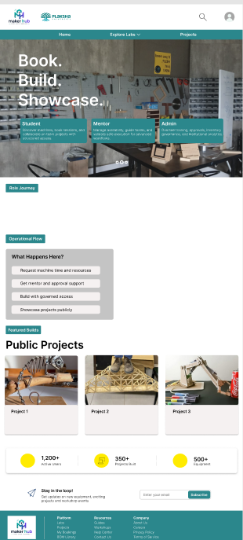
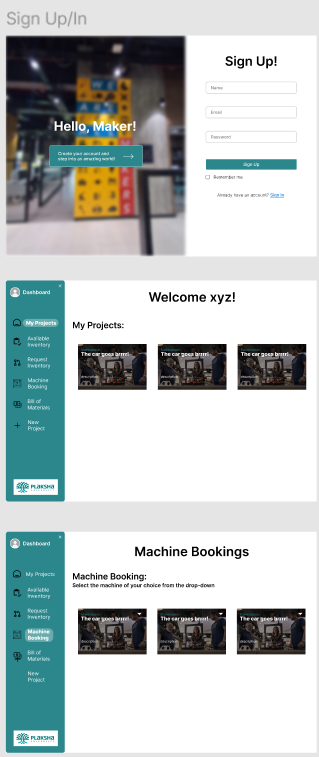

The unified platform for Plaksha makers — book equipment, build with mentors, showcase what you make.
Plaksha's hands-on culture lives across a growing constellation of labs — the Makerspace, the Robotics Lab, and more on the horizon. Each lab has its own equipment, its own mentors, its own intake forms, and its own way of remembering what students built last semester. Operationally, this fragmentation costs the institution in four concrete ways:
Plaksha Labs Hub is built to close all four gaps inside one product.
Plaksha Labs Hub is a single web platform where every Plaksha lab is a first-class tenant. Students discover labs and showcased work through a public front, then sign in to book equipment, file material requests, run their projects with mentors, and publish what they make. Mentors and admins run the same flows from the other side — approvals, inventory, analytics, training records — without leaving the app.
Equipment availability, reservations, training prerequisites, and check-in / out for every lab from one calendar.
Projects, teams, Bills of Materials, mentor availability, material requests, and procurement — wired together so a project lead has one place to operate from.
A public landing page that surfaces featured builds, what happens inside Plaksha's labs, and a recruiting funnel for the next cohort of makers.
BOM submitted → BOM approved → Material request approved → Issued with notifications at every hop.prefers-reduced-motion.The architecture deliberately keeps Server Actions as the only API surface. There is no separate REST or GraphQL layer to maintain; mutations are co-located with the components that trigger them, and authorisation is checked once at the action boundary against the session and the user's LabRole for the requested tenant.
┌─────────────────────────────────────────────────────────────────┐
│ BROWSER (any device) │
└─────────────────────────────────────────────────────────────────┘
│
▼
┌─────────────────────────────────────────────────────────────────┐
│ Next.js 14 · App Router │
│ │
│ (public) group (app) group │
│ ────────────── ───────── │
│ / landing /dashboard │
│ /labs directory /labs/[slug]/... │
│ /projects showcase /projects/[id]/... │
│ /sign-in auth split /admin/... │
│ │
│ Tailwind tokens · Once UI primitives · Radix components │
└─────────────────────────────────────────────────────────────────┘
│
Server Actions (the API layer)
│
▼
┌─────────────────────────────────────────────────────────────────┐
│ NextAuth v5 · Credentials + Entra ID + dev bypass │
│ Authorisation: Role × LabRole × Lab tenancy │
└─────────────────────────────────────────────────────────────────┘
│
▼
┌─────────────────────────────────────────────────────────────────┐
│ Prisma ORM ──▶ PostgreSQL │
│ │
│ Core User · Account · Session · Role │
│ Tenancy Lab · LabDivision · LabRole │
│ Equipment Machine · Asset · InventoryItem · Checkout │
│ Work Project · ProjectMember · Bom · BomItem │
│ Flow Booking · MaterialRequest · ProcurementRequest │
│ People ops MentorAvailability · Training · Notification │
└─────────────────────────────────────────────────────────────────┘
The product pivoted on 21 May 2026 to a teal primary, yellow accent, light-mode default palette aligned with the Figma direction. The teal anchors the institutional voice; the yellow is reserved for moments that should pull the eye — the "+ New Project" pill, the stats ring on the landing page, the active navigation indicator.


| Token | Hex | Role |
|---|---|---|
| Primary (teal) | #0F8E92 | Hero band, primary CTAs, focus ring |
| Deep teal (sidebar) | #0C6E71 | App shell sidebar, footer |
| Yellow accent | #FFD43B | New-project pill, stat ring, active indicator |
| Brand leaf green | #5BAA5B | Plaksha logo leaf, success states |
| Surface muted | #EEEEEE | "What Happens Here?" section, footer strip |
| Background | #F5F7FA | Page background (light-mode default) |
| Foreground | #17202A | Body text |
| Card | #FFFFFF | Card surfaces |
| Border | #DDEAF3 | Subtle separators |
prefers-reduced-motion respected everywhere. Every animation degrades to a static state for users who request it.A teal hero band carries the institutional headline and a magnetic CTA. Below, three role cards (Student, Mentor, Admin) route the visitor to the right sign-in flow. A CTA strip invites prospective students into the labs, "What Happens Here?" cards explain the Book / Build / Showcase loop, Featured Builds surface real student work, the stats ring summarises the year, and a newsletter capture sits above the deep-teal footer.
A split layout: on the left, a blurred teal gradient hosts a floating "Hello, Maker!" pill — instantly readable as Plaksha. On the right, a clean form offers Microsoft Entra ID single sign-on for Plaksha accounts, with email + password as the secondary path.
A persistent deep-teal vertical sidebar at 240px carries the Plaksha mark, a lab switcher (Makerspace ↔ Robotics ↔ future labs), and role-aware navigation. The "+ New Project" pill sits in yellow to invite action. The top header carries search, notifications with an unread badge, and the user avatar.
The Robotics Lab dashboard surfaces division toggles (ground robotics, drones), asset cards with live status, upcoming bookings, and recent project activity. The Makerspace catalog mirrors the same shell, scoped to its own equipment and inventory.
A material-request approval queue lets staff approve, partially issue, or reject in one screen, with the project context one click away. Analytics summarise utilisation, throughput, and bottlenecks per lab.
tsx prisma/seed.ts)Lab, LabDivision, LabRole, Asset, InventoryItem, Checkout, ProcurementRequest joined the existing Makerspace schema.buildMetadata helper standardising Open Graph and Twitter card output across pages./labs route unblocked.Built by Suryaansh as the ILGC project at Plaksha University, 2026.
Contact · suryaansh2112@gmail.com